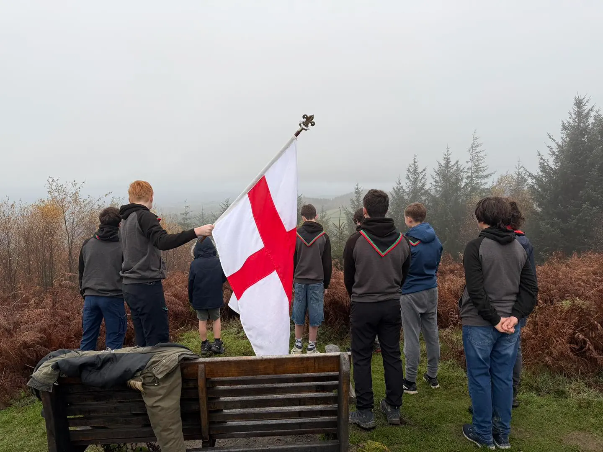
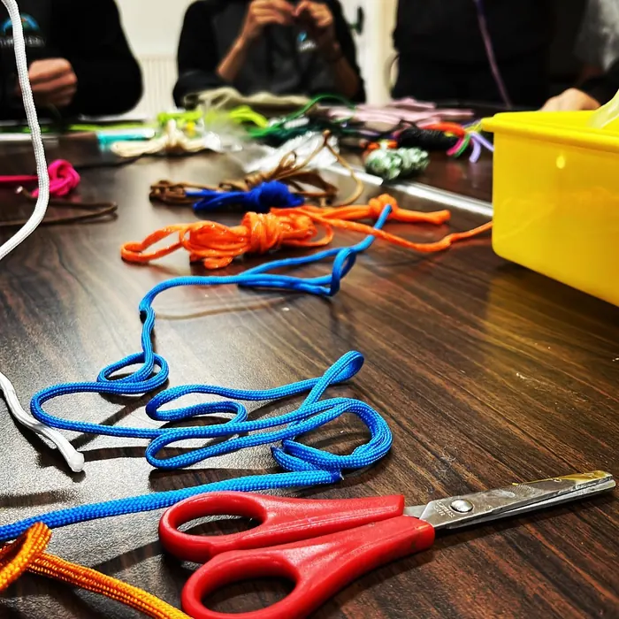

Gallery
What a year at Triffid actually looks like
Camps, expeditions, big days out and ordinary Monday nights. All our own photographs, all our own Explorers, all in real Shropshire weather.
Updated all the time
Our own photos
Latest adventures
What we've been doing lately
Every photo we've taken recently, newest first.
Loading photos…
The archive
A few of our favourites
Pulled out of the last couple of years.








Fancy being in next year's photos?
Mondays, 7–9pm at Ludlow Scout Hut. Email us and we'll sort you a night to come and see what it's like.